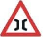
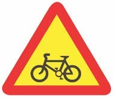

Road safety sign
Meaning

A triangular sign showing a narrow bridge.
(vii)
G. Pedestrian road

A triangular sign showing a bicycle or cyclist lane.
(viii)
H. Bus stop
Question
i
ii
iii
iv
v
vi
vii
viii
Answer
2. Why are you advised to observe road safety signs?